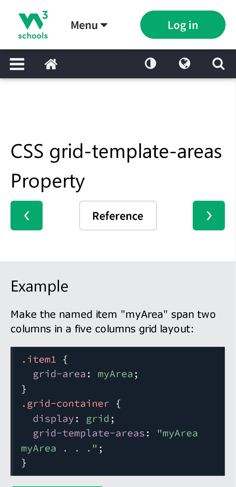
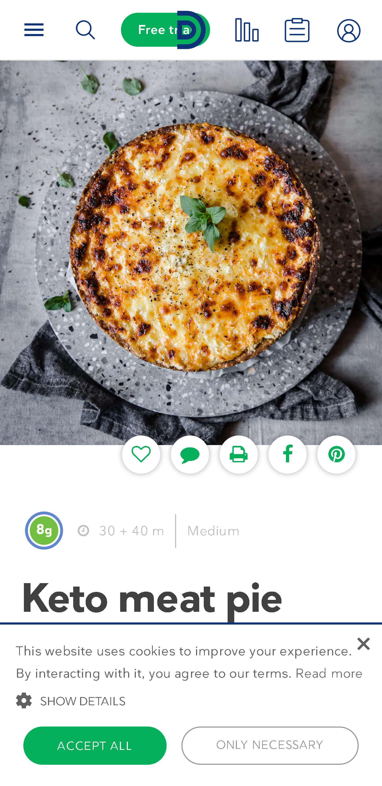

PARC: Proximity
w3schools
www.w3schools.com W3 Schools utelizes proximity to visually distinguish sections of the page. This page in particular starts with an example of the concept, a breif space before a title and definition, another space before a table, etc. Breaking the page in this way allows a reader to quickly skim the pr_grid-template-areas and find the information they need.
White Space and Clean Design
Diet Doctor
www.dietdoctor.com The white space utelized in this design helps to simplify the page and focus on what the visitor came there for. Keeping the clutter down also helps to remain easily readable and keeps confusion to a minimum.
PARC: Alignment
Barnes & Noble
https://www.barnesandnoble.com/Barnes and Noble, and most other shopping sites, utelize alignment to group items together into categories so that the user can quickly browse books that are thematically similar. This concept is often used to group sales items as well.